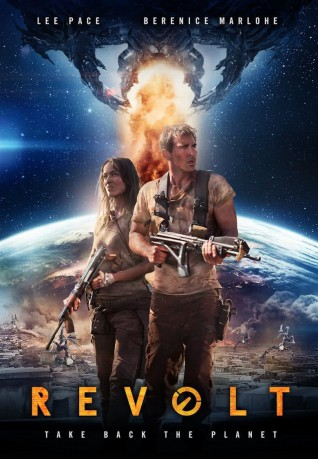

#7349 Maschinenland - Mankind Down
Alternativ: Revolt (Originaltitel)
 
 IMDB-Wertung: 5.2 / 10
IMDB-Wertung: 5.2 / 10  Metascore: 0
Metascore: 0 
The story of humankind's last stand against a cataclysmic alien invasion. In the war-ravaged African countryside, a U.S. soldier and a French foreign aid worker team up to survive the alien onslaught. Their bond will be tested as they search for refuge across a crumbling world.
Jahr: 2017
Dauer: 87 Minuten
FSK: 16
Land: England Studio: Vertical EntertainmentTonspuren: DTS - ,
Untertitel: Deutsch,
Auflösung: 1080p (1920x800) Größe: 6707 MB
Genre: Action, Sci-Fi, Krieg
Regisseur: Joe Miale
Drehbuch: Rowan Athale
Soundtrack:
Darsteller:
 Lee Pace als Bo
Lee Pace als Bo Bérénice Marlohe als Nadia
Bérénice Marlohe als Nadia Jason Flemyng als Stander
Jason Flemyng als Stander- Wandile Molebatsi als Roderick
- Tom Fairfoot als Lieutenant Smalls
 Kenneth Fok als Asian Journalist
Kenneth Fok als Asian Journalist- Alan Santini als Solider 1
- Sibulele Gcilitshana als Kara
- Sekoati Sk Tsubane als Juma
- Leroy Gopal als Jeandre
- Welile Nzunza als Cedric
- Patrick Bakoba als Kenyan Captain
- Ben Tjibe als Lookout
- Chantal Herman als Female Medic
- Barileng Malebye als Young Soldier
- Jabulani Mthembu als Poacher 1
- Batsile Ramasodi als Poacher 2
- Phoenix Baaitse als Father
- Bethel Dube als Daughter
- Reabetsoe Machepha als Smallest Boy
- Alpha Diallo als Lost Boys
- Ousman Diallo als Lost Boys
- Joshua Mañana als Lost Boys
- Sipho Sono als Lost Boys
- Mthuro Reshane als Lost Boys
- Busi Msibi als Nurse
- Mduduzi Makhathini als Poachers
- Tertius De Lange als
- Sidwell Buthelezi als Poachers
- Hamilton Lunga Buthelezi als Poachers
- Lucky Mdlankomo als Poachers
- Solly Michael Nlhapo als Poachers
- Eric Zulu als Poachers
- Wayne Smith als Stunt Poachers on Motorbikes
- Shaun Ford als Stunt Poachers on Motorbikes
- Sandile Skhosana als Willy
- Bruce Ashton als Bo's Unit
- Gary Robinson als Bo's Unit
- Jarred Branco als Bo's Unit
- Bongani Msimango als Bo's Unit
- Jadu Radebe als Bo's Unit
- Tshekiso Modise als Bo's Unit
- Lebohang Motedi als Fighters
- Veli Ntombela als Bo's Unit
- Ricky Erasmus als Bo's Unit
- Senty Mkhonza als Fighters
- Lehlohonolo Moekena als Fighters
- Anton Joubert als Fighters
- Zolile Ngxangani als Fighters
- Modise Tabane als Fighters
Datei: X:\2017(G-M)\Maschinenland - Mankind Down (2017, FSK16, 1920x800).mkv seit 18.10.2017
Festplatte: HD 2017(A-Z)-2018(A-F)
 Es gibt insgesamt 148 Filme in der Gruppe '2017(G-M)'
Es gibt insgesamt 148 Filme in der Gruppe '2017(G-M)'